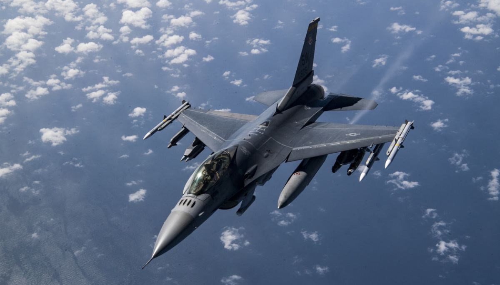

F-16 Fighting Falcon
Разработчик: General Dynamics (сейчас Lockheed Martin)
Первый полёт: 20 января 1974 года
Начало эксплуатации: 17 августа 1978 года
Единиц произведено: 4600
General Dynamics F-16 Fighting Falcon – один из самых массовых и успешных истребителей 4-го поколения, стоящий на вооружении 26 стран. Его создавали как лёгкий истребитель, но он превратился в многоцелевую боевую машину, способную вести воздушный бой и наносить удары по земле.
| Двигатели | Максимальная скорость | Боевой радиус | Практический потолок | Вооружение |
|---|---|---|---|---|
| Pratt & Whitney F100-PW-229 | 2,05 Маха (~2175 км/ч) | ~550 км (с ПТБ – до 1500 км) | 18 000 м | 1× 20-мм пушка M61A1 Vulcan (511 снарядов) AIM-9 Sidewinder AIM-120 AMRAAM AGM-65 Maverick AGM-88 HARM GBU-12 Paveway JDAM |
Особенности:
- "Стеклянный" кокпит – широкое остекление обеспечивает лучший обзор.
- ЭДСУ (электродистанционная система управления) – F-16 стал первым серийным истребителем с "fly-by-wire", что делает его сверхманёвренным.
- Высокая манёвренность – способен выдерживать перегрузки до 9G.
- Относительная дешевизна – F-16 стоит дешевле F-15, F-18 и Eurofighter.
- Модульность – можно легко обновлять авионику, двигатели и вооружение.
Минусы F-16:
- Один двигатель – повышает риск отказа в бою по сравнению с F-15 и F-18.
- Ограниченный радиус действия – уступает F-15 в дальности полёта.
- Меньшая нагрузка вооружения – не может нести столько же бомб, как F-15E.
F-16 – один из лучших многоцелевых истребителей в истории, обладающий высокой манёвренностью, мощным вооружением и невысокой ценой. Благодаря обновлениям он остаётся актуальным даже спустя 50 лет после первого полёта.